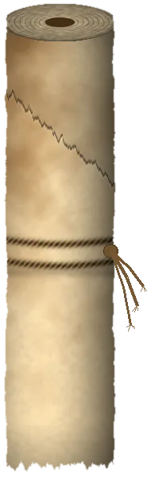

Write me a message in a bottle and I'll email you back when it reaches my shore.
Or find me on LinkedIn and GitHub.
To amy.cui4197@gmail.com

Your bottle is drifting my way. I'll write back when it reaches my shore!